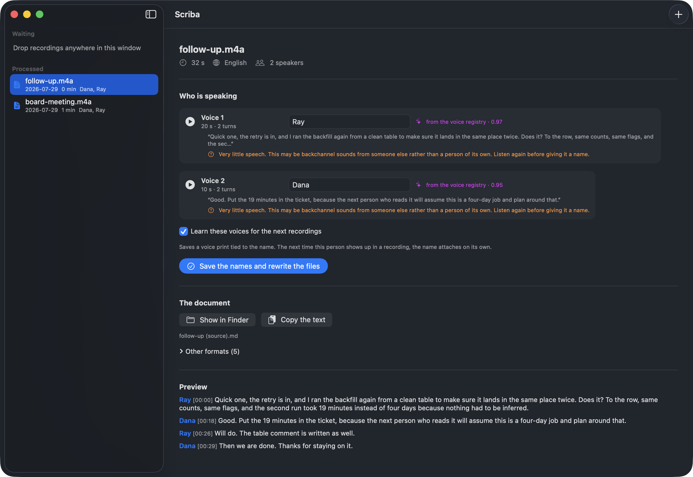
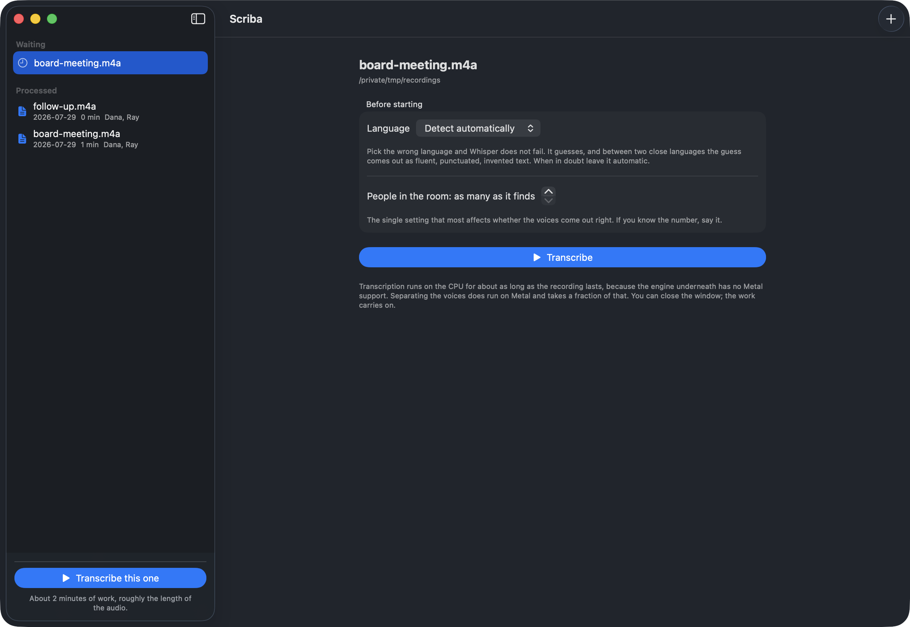
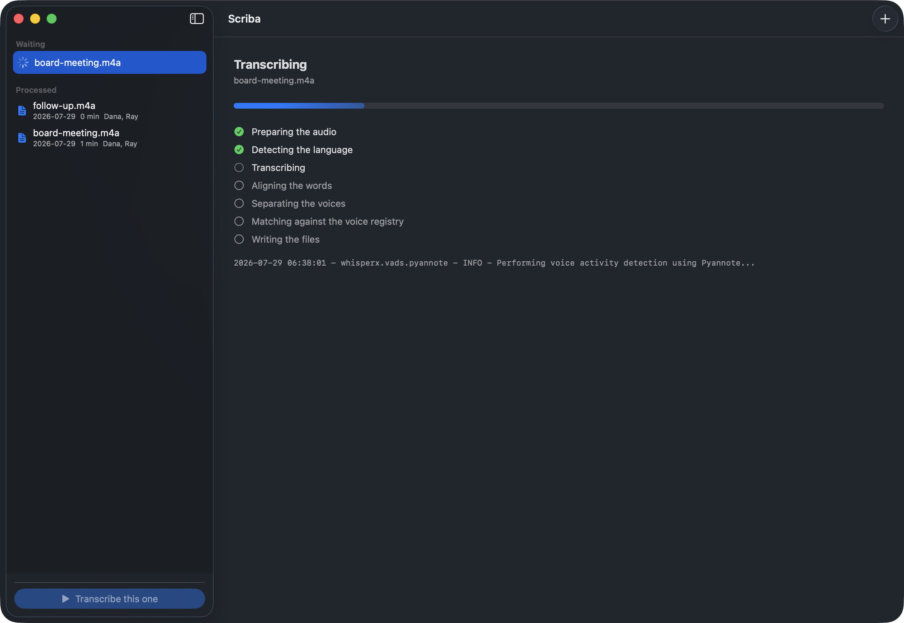

scriba turns a recording into a document with names in it. Name a voice once and it is recognised in every recording after that. The audio never leaves your machine.

The part everything else gets wrong
Diarization tells you there were two people in the room. It labels them
SPEAKER_00 and SPEAKER_01, and it renumbers them on
the next file, so the same person is 00 on Monday and 02 on Tuesday.
pyannote computes a 256-dimensional voice print for each speaker along the way, because that is how it separates them at all. whisperX discards it. scriba keeps it, files it under the name you type, and compares against the registry on every later recording.
| Similarity | What happens |
|---|---|
| 0.75 and up | The name is applied. |
| 0.55 to 0.75 | It suggests a name and waits. Confirming stays your job. |
| below 0.55 | Treated as a voice it has not heard. |
There is also a margin of 0.05 over the runner-up. When two people on file come out almost equally close, nothing is chosen: a wrong name raises no error and quietly poisons every transcript downstream, so the unanswered question is the better failure.
Why it exists
A script with a hardcoded --language it, handed a recording that was
actually in Spanish. Whisper did not fail. It produced fluent, punctuated,
entirely made-up Italian.
It does this to every sentence at once, and each one comes out plausible. Left alone, Whisper decides the language from the first 30 seconds, which in a real conversation is small talk.
scriba samples five windows across the whole file and votes, weighting each window by confidence. A close vote is reported as a doubt instead of being decided in silence.
So is a vote that was unanimous and weak. Four recordings here came back as Galician rather than Spanish, agreed on by every window, and the transcripts are a hybrid of the two. Agreement on its own is a share: windows that are all wrong together agree perfectly. The languages this model mixes up are listed, and a winner with neighbours has to clear a higher bar before it counts as decided.
How it goes
Transcription runs for roughly as long as the recording lasts. An app that begins that the moment you drop a file in is an app that decides to occupy your machine for an hour without asking.
Drop files in, set the language and the number of people if you know it, and press the button. The estimate is shown before the run rather than after, because a progress bar that has not moved in four minutes reads as a hang.

The window can be closed while it works. What the engine prints is shown as it prints it, because a machine that has gone quiet for ten minutes should be able to prove it is still busy.

Where the time goes
6 minutes 45 of Spanish conversation on an M4 with 16 GB, warm model cache, identical settings on both sides.
ctranslate2, the engine under faster-whisper, has no Metal backend,
so transcription runs on the CPU whatever you do. Diarization does run on Metal,
and the output was verified identical to the CPU run before that became the
default: same 165 turns, same labels, every boundary matching to the millisecond.
Alignment, the stage that sounds expensive, costs 14 seconds.
Getting it running
Python 3.10 or newer and ffmpeg. A launcher on your PATH saves you from typing conda activate forever.
scriba token hf_…. It goes into the Keychain rather than into a file in your home directory.
speaker-diarization-3.1, segmentation-3.0 and speaker-diarization-community-1, on the same account as the token. Miss one and the download fails with a bare 403.
Then name the voices once. Every recording after that arrives with the names already filled in.
# the language is worked out on its own scriba run recording.m4a # knowing the number of people helps more # than any other setting scriba run meeting.m4a --min-speakers 2 \ --max-speakers 2 # who is who, before you decide scriba dossier meeting.m4a # name them once scriba name meeting.m4a \ SPEAKER_00=Ada SPEAKER_01=Rafiq # and from here on scriba voices list scriba watch ~/Memos scriba jobs list